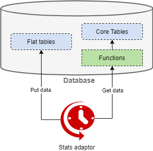

Architecture
System context architecture

Solution architecture

Service adaptor architecture

- triggered every 10 sec(+runtime)
- calls database functions
- functions calculate all statistics from database engine tables
- new statistics are returned to the adapter
- inserts a pack of upcoming stats items into the DB flat tables
Service endpoint checker

- triggered every 10 sec(+runtime)
- gets endpoints data from core database tables
- makes requests to the cosmos network for the received endpoints
- checks if endpoints are working correctly
- updates endpoint information in database core tables
Service height checker

- triggered every 4 hours
- receives information from the database about the processing of new blocks of blockchains (zones)
- checks the work information for each zone
- if in the last 1 hour there is no analytics for some zone, then it sends a notification to the telegrams development group